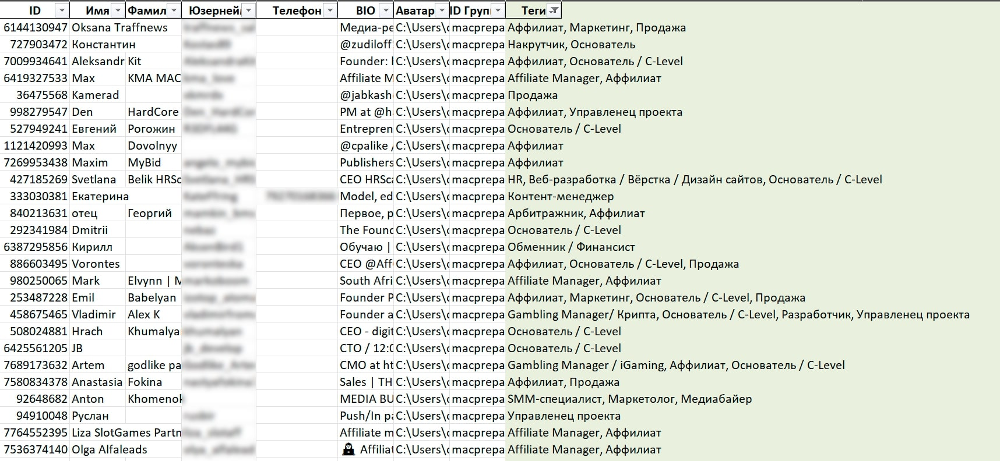

Парсер чатов с определителем профессий
Инструмент для автоматического поиска и фильтрации контактов в Telegram-чатах по профессиям и ключевым словам с экспортом в CSV и удобным веб-интерфейсом.
🔍 Проблема
В iGaming-индустрии критически важно оперативно находить партнеров: владельцев казино, аффилиатов, специалистов на аутсорс, а ручной поиск в Telegram-чатах - это ад.
Команда тратила до 8 часов в неделю на:
- Просмотр сотен профилей вручную
- Анализ биографий на наличие ключевых слов
- Копирование контактов в таблицы
- Повторную проверку и фильтрацию
Это не только медленно, но и субъективно - легко пропустить нужного человека или, наоборот, добавить нерелевантный контакт.
🎯 Расширение проблематики: Нужно было не просто найти контакты, а структурировать их: определить профессию, уровень компетенции, сферу интересов - и сделать это масштабируемо для десятков чатов одновременно.
💡 Решение
Я разработал комплексное решение на Python, состоящее из двух частей:
1. Парсер + классификатор
- Сбор данных: Скрипт подключается к Telegram API, собирает пользователей из указанных чатов (публичных или приватных, куда есть доступ).
- Анализ биографий: Каждое описание пропускается через NLP-фильтр с собственным словарем профессий (казино, аффилиат, маркетолог, разработчик и т.д.) и ключевых слов («ищу партнеров», «работаю с казино», «партнерка» и т.п.).
- Оценка релевантности: На основе совпадений по ключевым словам и паттернам присваивается «уровень уверенности» - чтобы отсеять ложные срабатывания.
- Экспорт: Все данные экспортируются в CSV с колонками: username, имя, био, теги, уровень релевантности.
2. Веб-интерфейс для поиска
- Удобный фильтр: Загруженные контакты можно фильтровать по тегам, ключевым словам, уровню релевантности.
- Поиск по любому полю: Быстрый поиск по имени, юзернейму или тексту биографии.
- Экспорт по выборке: Можно выгрузить только отфильтрованные результаты, например, только «аффилиаты» с высокой релевантностью.
📊 Таблица с тегами и релевантностью
🎥 Демонстрация веб-интерфейса
📈 Результат и профит
Количественные результаты:
- Время на поиск партнеров сократилось с 8 часов до 30 минут в неделю.
- Качество базы контактов выросло в 5 раз благодаря фильтрации по релевантности.
- Команда смогла охватить в 10 раз больше чатов, чем раньше.
Качественные результаты:
- Ушла рутина, а сотрудники занимаются стратегией, а не копанием в чатах.
- База стала структурированной, легко найти именно того, кто нужен.
- Инструмент был передан другим отделам и теперь им пользуются и маркетинг, и партнерский отдел.
🚀 Профит для бизнеса
За первые 3 месяца использования инструмента было заключено 12 новых партнерских соглашений, которые принесли компании дополнительный доход.